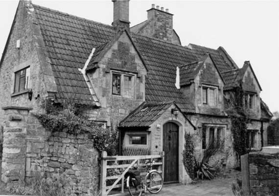

Type of building:
Attached former farmhouse
Listing:
Grade ll
Plan and elevation:
Single pile, three units. 1 1/2 storeys.
Summary of the probable main building
history:
Late 16th Century. Remodelled in the late 18th Century and again in the late 19th
Century

South elevation
Layout:
Has evolved over many years but the original form is evident. The present building
is aligned approximately east-west and is three bay on 1 1/2 - storeys, with the
end bays currently linked by a passage running north of the central room.
The upper storey is fitted entirely within the roof space and is of essentially similar plan. A higher floor has been recently contrived within the eastern bay attic space.
There is a large stack in the western wall of the central bay which does not seem to have served the west bay. At first floor level a fireplace has been inserted in the western room and the stack extended to serve it. The ceiling of the central room is higher at ground floor level and the floor at first floor correspondingly higher than the two end bays.
Access is through a door in the south front into the western bay masked by a 1960s stone porch, and opposite in the north wall is a blocked doorway. The only other doorway is in the east gable end.
Construction:
(a) Walls. The house is stone built in coursed, squared rubble, oolitic limestone
with large roughly finished quoins. Three dormers on south are similar but better
condition and neater cut masonry suggest replaced or new.
(b) Windows. Windows are all mullioned with hood mouldings, three different mullion mouldings (but see below for west end and upper east end). Central ground floor window is three light divided by splayed mullions with arris at apex and at glass. All others two light and mullions are half round either side of a fillet. Windows at the east end are a variant of this cut into for external shutters, and with the hood mouldings shaved back.
(c) Stack. The large stone stack has moulded jambs to the fireplace opening and a massive timber lintel. This is now squared-off, but clearly was once cut into a four-centred or pseudo four-centred arch shape with mouldings continuing those of the jamb (fragments survive). The hearth stone is buried but was seen during recent renovations to be c.15cm. in advance of the jambs and about 25cm. deep below the current red-tiled hearth floor.
(d) Roof. The roof is basically a raised oak cruck but this is inferred from timbers only barely discernible behind plaster and paint. Two sets of blades are placed at the room divisions producing the three bay plan. The blades rise from the top or near the top of the external walls at first floor level. The western one is largely intact. The eastern has lost the lower part of the northern blade, cut away for the creation of the corridor, and propped by a timber visible in the first floor central room. The southern blade has also been truncated just below the collar and appears to be taken down on a much thinner replacement blade bolted to it and running alongside the dormer. Collars are visible or inferred and the tie beams are at first floor level. Purlins are morticed into the blades and set into the western gable end. What little can be seen suggests joints are morticed and pegged. The collar of the western truss runs through the stack in the western room which strongly supports the suggestion that the fireplace and stack here is a later addition. Originally it would have run west of the original stack: the new stack was built against it.
Historical structural analysis: The structural development of the house is fairly clear from a study of the standing fabric and is helped by a survey showing changes carried out in 1893. The original building is represented by the ground floor walls and gable ends and roof timbers of the western and central bays. The present front door appears to be the original entrance, and the only one. The roof covering is post 1893, as the survey of that date shows thatch. It also shows that the eastern stone dormer on the south facade is of that date as well. Doubt has been expressed above on the status of the other two dormers. The "as existing" drawing of 1893 shows the eastern dormer to have replaced a low window barely above eaves level covered by a curving thatch "dormer". Evidence of a now blocked similar opening is apparent in the sloping ceiling on the north side of the eastern bay. The positions of supposed similar openings in the central and western bays have been removed by 18th/early 19th century work, which is when major changes were otherwise made. The best way of making sense of this complex of observations is to give a narrative.
Date & development:
The first house
The first building then was a simple rectangle divided up into three rooms. The
house was thatched between steep gables. Entrance was through the present front
door into a room lit by a stone mullion window next to it and small opening in
the west gable designed to throw light into the rear of the room. The door between
this and the central bay must have been more or less where the corridor is now.
There is no evidence but the stair, or ladder, to the upper floor was probably
in this space, perhaps against the gable end, or tucked against the stack.
The central bay was the main room, a parlour/kitchen. It would have extended the full depth of the house, the current corridor being later. The large three light window and the fireplace, astonishingly elaborate and large in such a small house, and the higher ceiling, make it clear this is the main living room, a last echo of the medieval hall tradition. Ceiling beams have simple stopped chamfers and presumably act as the tie beams for the roof timbers.
The eastern bay is very modernised, but the 1893 survey shows the ground floor lit only by a small rectangular window, high up. This and the fact that the windows in the eastern gable appear to have been inserted (though old in themselves) suggest that this end bay was originally a store or even an animal byre. This would require a separate entrance and no trace can be seen in the visible walls. It is possible that such door might have existed in the north side, but this was rebuilt later. Supporting this interpretation is the position of a yard wall which formerly existed in line with the division between central and eastern bays of the house, shown on the 1960s survey. This provided a closed off yard associated with the eastern bay.
The evidence of the 1893 survey and the blocked low dormer in the eastern bay suggest that the top floor was originally no more than a loft lit by three low thatched dormers on each roof slope. It was quite possibly used for storage and not necessarily subdivided, although a bedroom in the west end would be possible. Modern fittings make it difficult to tell if there was a fireplace in the upper central room but this seems unlikely.
This adds up to a fairly basic farmhouse of no great pretension, except for the elaborate fireplace. The date of the fireplace is likely to be 16th or early 17th century. It is not possible to say whether the fireplace has been inserted, but it seems unlikely, unless the house is older still, which is possible given the roof structure. A date earlier in the range is to be preferred given the combination of wealth indicated by the fireplace and the cramped, old fashioned accommodation. The preferred conclusion is that the house is probably later 16th Century in date.
Changes
In the late 18th Century the house was replaced by a new structure attached to
the north side. The farmhouse became a servants quarters. This is the date of
the first major structural changes. These include:
1. The demolition of the north wall of the eastern bay and its replacement by a party wall (in ashlar) shared with the new house, making the bay a little deeper. This also required the widening of the gable end.
2. The raising of the northern eaves level of the central bay by setting the new rafters on the party wall (built in ashlar) of the new house.
3. A corridor was contrived along the north side of the central bay on both floors by building stud partitions. At first floor this was made possible by the raising of the roof and by cutting away the northern cruck blade of the eastern truss. The oldest internal partitions on the first floor may date from these changes, marking the improvement of the property and the provision of proper bedrooms on the first floor.
4. On the ground floor a new doorway was cut directly underneath that on the first floor leading into a cellar contrived under part of the new house. A similar doorway, now blocked, was set in the party wall in the same position on the first floor, leading via some steps to the higher first floor of the new house.
5. Another door was cut into the north wall on the ground floor opposite the front door. This is now blocked but would have provided access across a small courtyard to the cellars of the new house.
6. It is still not clear where the stairs might have been, but they could have been moved to the eastern bay, where modern stairs now are, at this time, or a ladder could have been retained in the western bay.
7. It is likely that, on grounds of privacy for the people of the new house, the last surviving northern dormer was blocked at this time (the other two destroyed as the northern wall was modified by the new house)
(b) Other changes.
The two western dormers are in existence by 1893
but look to have been built or rebuilt in the 19th Century. The quoins and
gable blocks are much more squared and neat than the rest of the building.
It is unlikely stylistically that they were inserted when the building was
altered as above, c.1800, but they could have been put in to improve the
lighting of the upstairs chambers between the 1830s and the 1893 survey.
Alternatively they may be original loading dormers rebuilt in 1893, but
two such dormers look rather excessive for such a small house.
This might have been when the chimney piece and stack in the upstairs western room was inserted. The chimney piece looks to be late 17th to 18th Century and has been recycled from somewhere else. It has been brought complete with the recess for bread proving which would not normally be expected in a bedchamber. A date later that the early 20th Century is unlikely, as it has been inserted as a working fireplace, though the flue is now blocked.
In the 1930s (?) an extra floor was inserted in the roof space of the eastern bay. Most of the roof timbers were removed here and a new set of ad hoc structures inserted. The floor of the new storey was at collar height of the main truss. New partitions were inserted in this bay. This may also have been when the windows were inserted in the gable end at first and ground floor, lighting the new rooms. These look recycled from another old building. A new window, plain with a metal casement, was inserted in the top of the eastern gable. This is also the likely date of the replacement of thatch with pantile.
In the 1960s a porch was added to the front door in a matching style and wide shallow windows inserted in the western gable wall to light the ground and first floor western rooms. All floor boards and ground floor joists are modern, the original floors are likely to have been of beaten earth or flags.
Ownership/occupation:
The building is
the former homestead of a farm, which, in turn, may have been the demense
of one of Batheaston's medieval manors. Documentary sources take ownership
and occupation of the farm back to 1620. For the history of the farm in
some detail see Dobbie from which this information is derived. Despite the
common ownership which may have been evident in the later 18th Century referred
to above, the cottage as it stands today was functioning as the farm homestead
in the early to mid 19th Century - see the Tithe Apportionment Schedule
and accompanying map, 1840, and auctioneers particulars for the sale of
the farm,1869. In 1840 the property was owned by Henry Walters and let to
Thomas Clark. In 1869 Mr. John Candy was in occupation as a tenant for 21
years (from 1861) farming approximately 45 acres and paying rent of £103.
Presumably the 1869 proposed sale was aborted as the property was still
owned by the Walters family (William Melmoth Walters) in 1893.
References and bibliography:
- B. M. Willmott Dobbie "An English Rural Community" Bath University Press, 1969
- Auctioneers particulars,1869 - The Batheaston Society Archive 0025
- Tithe Apportionment Schedule & Map,1840 - Somerset Record Office
- Memorandum of Agreement, 1893 - In the possession of the owner
Reference Pictures
| East Elevation |
Survey Drawings
| Ground Plan |
Section |
South Elevation |
Images from the Archives
| Historic elevations derived from
a surveyor’s drawings of 1893. Note the thatched roof |
16th Century moulded wood fireplace
surround |
Now much mutilated but originally
formed a four-centred arch |
| Land holdings and use
in 1869 derived from auctioneers particulars of that date |